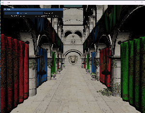
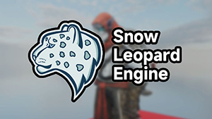
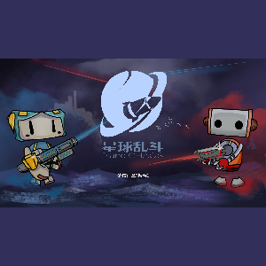

Projects

VGFW
VGFW (V Graphics FrameWork) is a header-only library designed for rapidly creating graphics prototypes.
View Source
SnowLeopardEngine
Yet another game engine group project written in C++ with OpenGL 4.6. I'm the group leader and the main developer of this project.
View Source
VRaytracer
VRaytracer is a raytracer written in C++. GUI with ImGui; Multi-threaded rendering; Configurable scenes;
View Source
VSoftRenderer
My toy soft renderer. Cross Platform (Windows, Linux, macOS); Lightweight Implementation; Programmable Shading Pipeline
View Source
GameEngineStarter
A minimal C++ game engine starter project. Cross-Platform: Windows, macOS, Linux, ARM Linux (Raspberry Pi), Emscripten (WASM) and Modern Android. Minimal & Popular Dependencies: Only spdlog, glad, imgui, glfw, sdl2. For Android, we need GameActivity and EGL. And more features!
View Source
CatmarioGB
GameBoy verion of CatMario. Made with GB Studio. You can play it online at itch.io or by GameBoy emlators.
Play on itch.ioView Source

GoldMiner-Rebirth
The classic game remake. Build for GameShell, Trimui (Smart Pro and Brick) and other LOVE2D compatible gaming handheld devices. Made with LÖVE(11.1). In my childhood, my friends and I love play this game (it was a popular Flash game). So I decided to remake it.
Play on itch.ioView Source
PlanetChaos2
Optimized version of PlanetChaos. Pixel art. I'm the leader programmer and project manager of it.
View Source

PlanetChaos
A game like Worms, made with Unity 2019.4f1(LTS) by GeniusGameStudio. It's a group project during my intership. I'm the leader programmer and project manager of it.
View Source